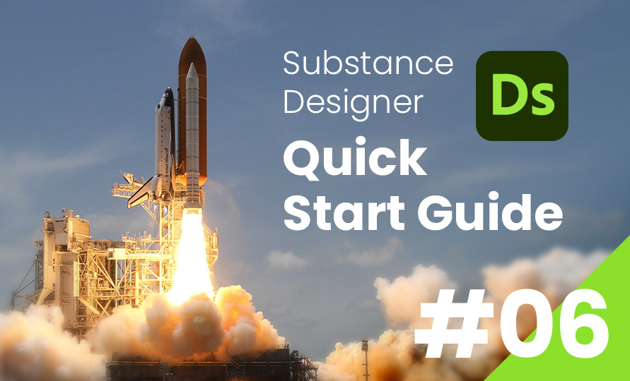
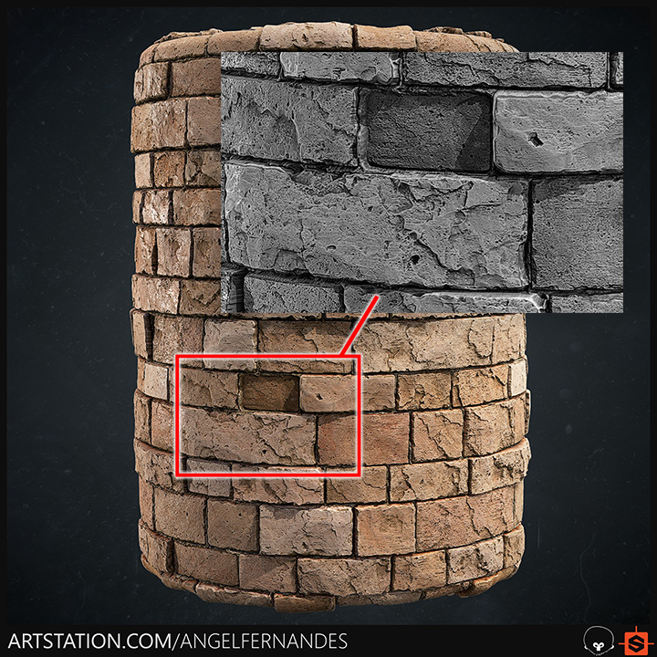
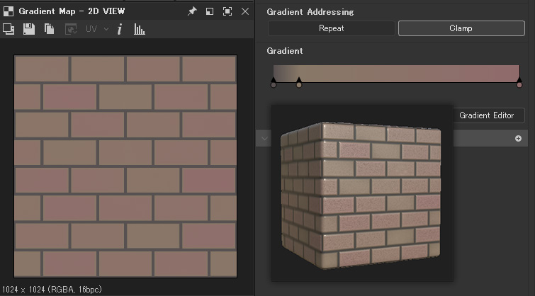
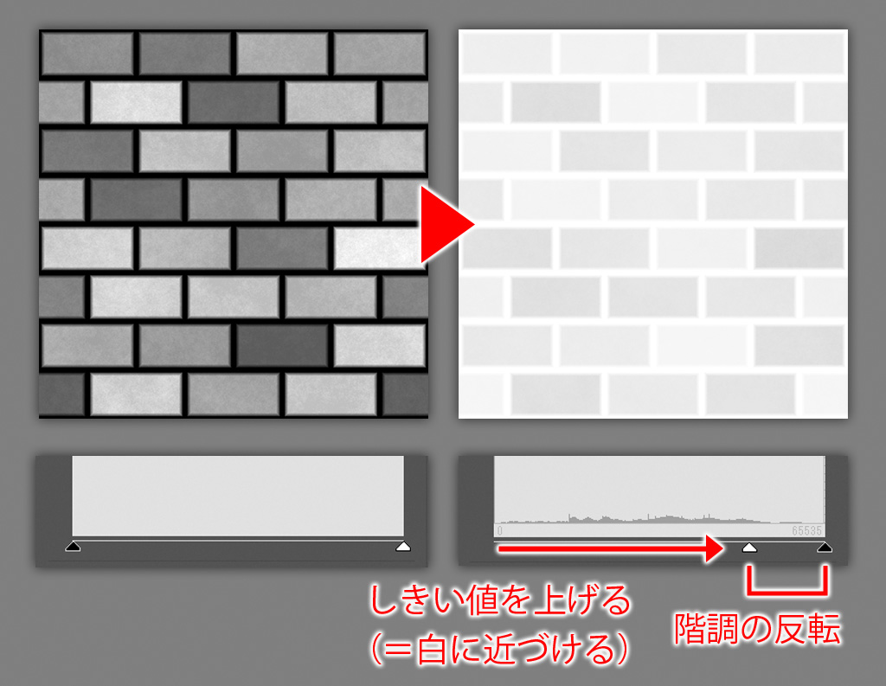
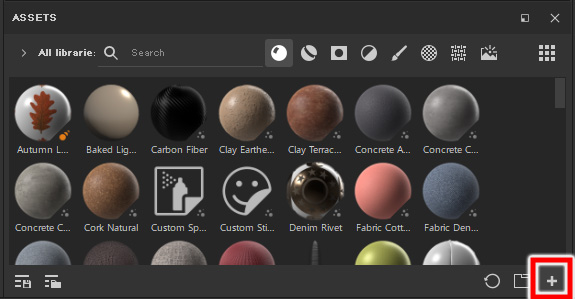
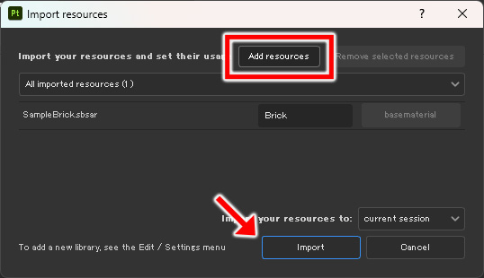

SubstanceDesigner
Substance Designer クイックスタートガイド
第6回：マテリアルのエクスポート
2024/03/18

前回 は、画作りに大切なディテールの理論と、ノーマル・AOマップについて解説しました。
今回はいよいよパッケージをマテリアルとして書き出すまでの工程を解説しようと思います。
ディテールの追加
まずは、前回解説したディテールの理論をもとに、ディテールを追加していきます。
ミディアムディテール
ある程度近い距離から見たときに見た目が映えるように、中程度のディテールを追加していきます。
今回は、Artstationに公開されているマテリアルを参考に、「レンガごとに奥行きが違う」 様子を再現することにしました。
Medieval Brick Wall Material - Substance Designer : https://www.artstation.com/artwork/58N6L1

こういった、パーツごとのバリエーション を出すには、FloodFill ノードが便利です。
FloodFillノードは、入力されたグレースケールマップから、完全な黒で囲まれた領域ごとに位置マップを生成する ノードです。
FloodFillで生成した位置マップをもとに、派生ノードから様々なバリエーションを作ることができます。
今回は、Flood Fill to Random Grayscale ノードを使います。
その名の通り、FloodFillノードから、ランダムな明度のグレースケールマップを生成するノードです。
このランダムなグレースケールを、Blend ノードで 乗算 でハイトマップに合成することで、高低差のバリエーションを再現することができます。
スモールディテール
次に、至近距離から見たときに視認できる程度のディテールを追加していきます。
今回は、表面の ザラザラした質感（サーフェイスノイズ）を追加してみます。
こういった細かいノイズを加えたい場合、Fractal Sum Base ノードが便利です。
これをハイトマップに乗算でのせることでザラザラした質感を加えることができますが、そのままではコントラストが弱いです。
そのため、Histgram Scan ノードを間に挟み、コントラスト・レベルを調整します。
これまでの要領でディテールを加えていけば、よりリッチな見た目に近づけることができますが、本解説ではここまでとします。
ディテールを追加していくときは常に、ラージ・ミディアム・スモール のバランスを崩さないよう注意を払いましょう。
カラー・ラフネスマップの作成
次に、作成したハイトマップをもとに、カラー・ラフネス マップを作成していきます。
カラーマップ
ハイトマップからカラーマップを作成するには、Gradient Map ノードを使います。
Gradient Map ノードは、グレースケールの入力をカラーに変換するノードです。
出力の色を調整するには、グラフのプロパティから Gradient Editor を選択し、カラーピッカーを開きます。
スライダー上をクリックしてピンを追加し、カラーピッカーで色を指定することで、入力されたグレースケールの各ピクセルがカラーに再マッピング されます。
▲ Gradient Map でレンガの色味を再現してみました。
ラフネスマップ
ラフネスマップ とは、物体の光沢具合 を再現するテクスチャです。
黒（0）に近いほどツルツル、白（1）に近いほどザラザラ の見た目になります。
Roughness（粗さ） という名前から、1に近いほど粗くなる と考えると覚えやすいですね。
今回は、Levels ノードで階調のしきい値を調整するだけで事足りました。

Levelsノードのパラメータで 階調を反転 させている点に注目してください。
ハイトマップをもとにラフネスマップを作成しているので、黒に近いほど物体の表面が奥まっている ということになりますよね。
奥まっている部分ほど光沢を抑える、つまりラフネスマップでは階調を反転することで、凹凸を強調することができます。
このようなちょっとした工夫によって、特にゲームのようなリアルタイムレンダリングにおいては、カメラを回転した時の反射の情報によってルックを魅力的に見せることができます。
マテリアルのエクスポート
最後に、これまで作成したグラフを sbsarファイル として書き出します。
sbsarファイル
SubstanceDesignerのパッケージは .sbs という拡張子のファイルとして保存されます。
sbsファイルには、SubstanceDesignerのUIで表示するための様々なデータが格納されていますが、SubstancePainterなどの外部のアプリケーションでデータを扱うには不要です。
そのため、マテリアルを外部のアプリケーションにインポートするには、必要なデータのみに最適化した sbsarファイル として書き出します。
sbsarファイルの書き出し
sbsarファイルは、パッケージ単位 で書き出されます。
sbsarファイルを書き出すには、パッケージを右クリック > Publish .sbsar file を選択します。
すると、書き出し設定のダイアログが表示されるので、書き出し先のパスを設定して Publish を選択します。
SubstancePainterへのインポート
sbsarファイルをSubstancePainterにインポートするには、アセットウィンドウ右下の + アイコンを選択します。
 
インポート設定用のダイアログが表示されるので、Add Resource を選択し、エクスプローラーを表示します。
sbsarファイルを選択し Import をクリックすると、マテリアルがインポートされます。
これで、作成したマテリアルをSubstancePainterにインポートすることができました！
まとめ
全6回にわたり、SubstanceDesignerでマテリアルを作成・書き出す工程を解説してきましたが、今回でこのシリーズは完結となります。
以降は、パラメータを制御してプロシージャルなマテリアルを生成するテクニックを解説したり、mdlグラフについても調査していきたいな、と考えています。